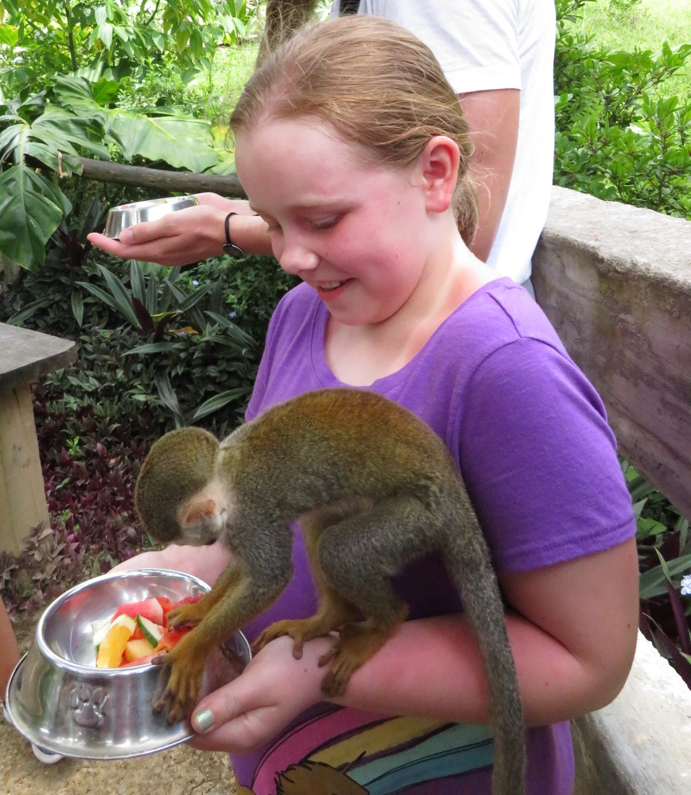

I am an 8th grader at gems world academy chicago. I love nothing more then to learn new and exiding things. When creating my desingn =s I focese on how to conect urben enviorments with new and uneque natural opertuoon etys.My weekest subject is spelling and hand righting.I am an 8th grader at gems world academy chicago. I love nothing more then to learn new and exiding things. When creating my desingn =s I focese on how to conect urben enviorments with new and uneque natural opertuoon etys.My weekest subject is spelling and hand righting.I am an 8th grader at gems world academy chicago. I love nothing more then to learn new and exiding things. When creating my desingn =s I focese on how to conect urben enviorments with new and uneque natural opertuoon etys.My weekest subject is spelling and hand righting.I am an 8th grader at gems world academy chicago. I love nothing more then to learn new and exiding things. When creating my desingn =s I focese on how to conect urben enviorments with new and uneque natural opertuoon etys.My weekest subject is spelling and hand righting.
I ingade in meny extra coricular activitys. they encurege my loving of learining and alow me to explore the world in unique and creative ways.I ingade in meny extra coricular activitys. they encurege my loving of learining and alow m e to explore the world in unique and creative waysI ingade in meny extra coricular activitys. they encurege my gggggggggggggggggggggggggggggggg of learining and alow me to explore the world in unique and creative waysI ingade in meny extra coricular activitys. the y encurege my loving of learining and alow me to explore the world in unique and creative waysI ingade in meny extra coricular ey encurege my loving of learin ing and alow me to explore the world in unique and creative ways